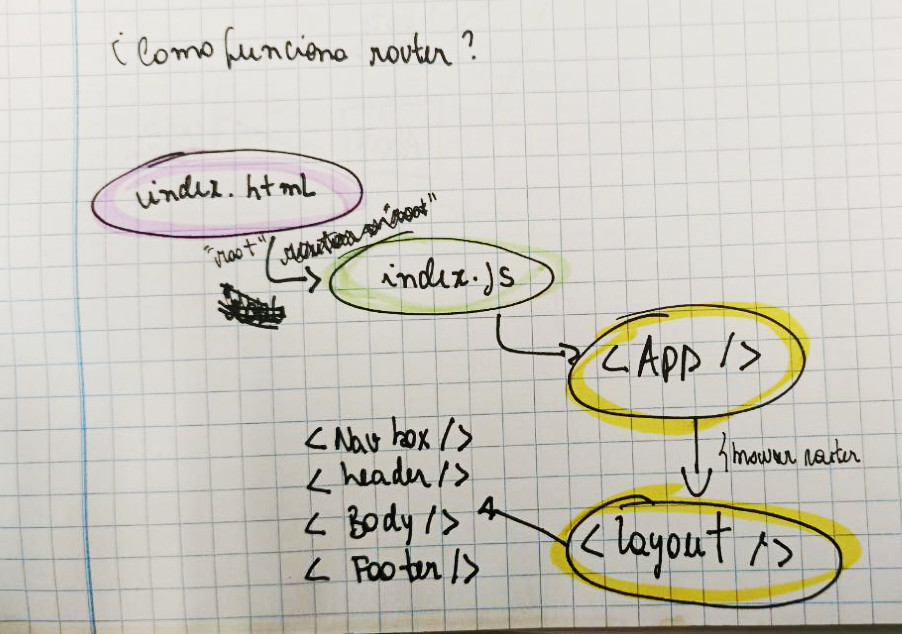
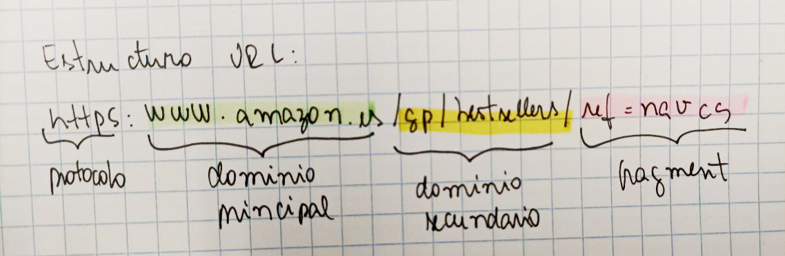
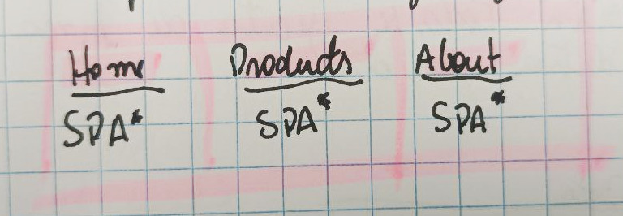

React
Estructura carpetas React
Recordar! Para usar w3css debo instalar por el terminal de visual code, utilizando el comando npm install w3css.
router es una hierramienta de React que está presente en tres carpetas(dominios) muy importantes: layout, pages y routers.
https://albertprofe.dev/reactjs/rjslab5-3.html
Aqui la web de react router: https://reactrouter.com/en/main
¿Qué es router en React?
Es una hierramienta que está presente y crea rutas para tres carpetas(dominios) muy importantes de un proyecto en React: Layout, pages y routers. Para instalar router en react, se puede consultar aquí el paso a paso: https://albertprofe.dev/reactjs/reactjs-app-router.html
¿Cómo funciona la hierramienta router?

Dentro de router hay una función llamada

Hay dos tipos de atentificaciones basicas: JWT y oauth
JWT: jason web token. Es el tipo de autenficación más comun. Te da un token de acceso.
Apirest: la hierramienta que permite llevar y traer json. Axios: hierramienta que hace las peticiones a la APIREST Axios: hace las operaciones CRUD Axios hace peticiones a ApiRest y ApiRest lleva y trae (importa) los datos de mockapi.
C:Creat R: Read U: Update D: Delete
Qué necesito para hacer un formulario en React?
- hook usestate
- for spread
- array de objeto literal
- mapping
- onlick (e)
- data structure
Paseadores
En reat siempre hay paseo entre Array, Json y Strings.
Cycle Request Response
Css:
https://semantic-ui.com/
Frameworks
Vite - Remix is a full stack web framework that lets you focus on the user interface and work back through web standards to deliver a fast, slick, and resilient user experience. People are gonna love using your stuff.
Vite - https://vitejs.dev
w3.css - https://www.w3schools.com/w3css/default.asp
los contenidos que están en Idex.hmtl son los que se envían al cliente.
fakerjs.dev - sirve para hacer fakers de prueba con la web para probarla.
Los componentes se organizan por vista.
Single Page Aplication
 SPA: Simple Page Aplication
{kind=link}
SPA: Se guarda los datos en la cache del cliente Server-Render:: Se guardan los atos en los servidores. Multipage: Renderiza las paginas por separado
Como praxis, en react cada componente es un .jsx
Los archivos .js son archivos que no serán renderizados
Hooks
Gestionan los estados en react y hace con que los datos y el return esten en contacto directo. Pueden mejorar o empeorar una web, depende de como se utilizan. Cualquier cambio en el render se hace con un hook.
{kind=link}
- Boton
- cambio de estado
- Renderiza